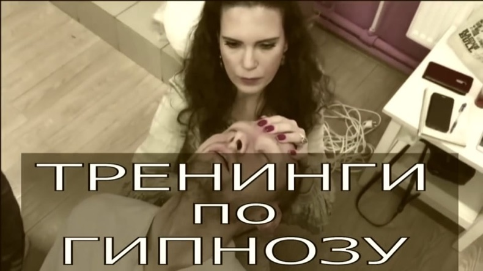
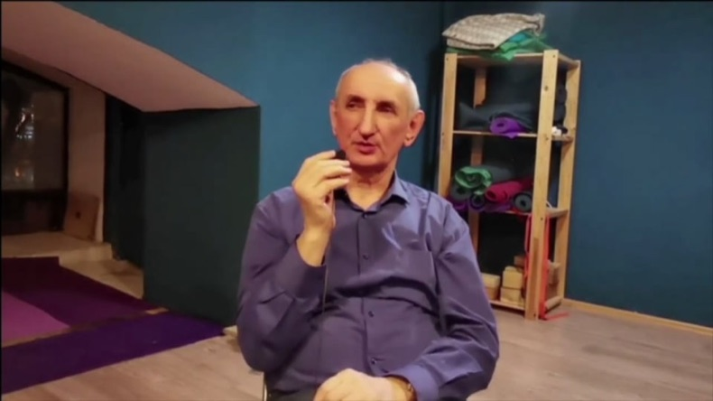
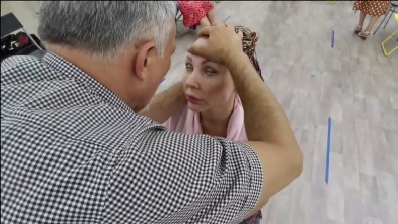
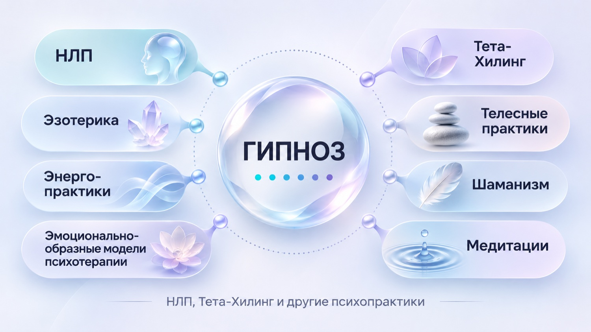
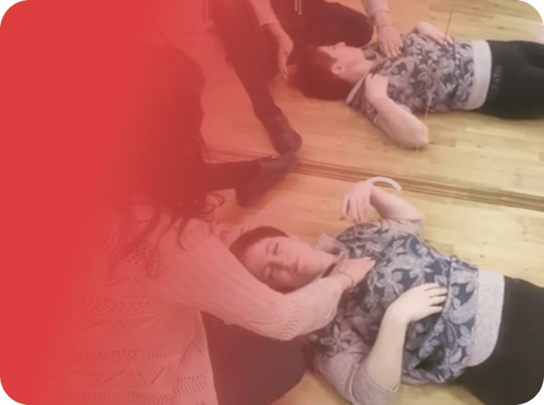
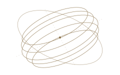
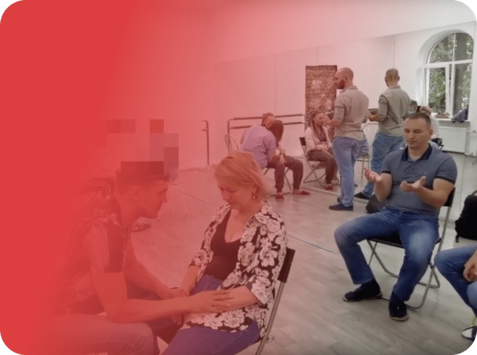
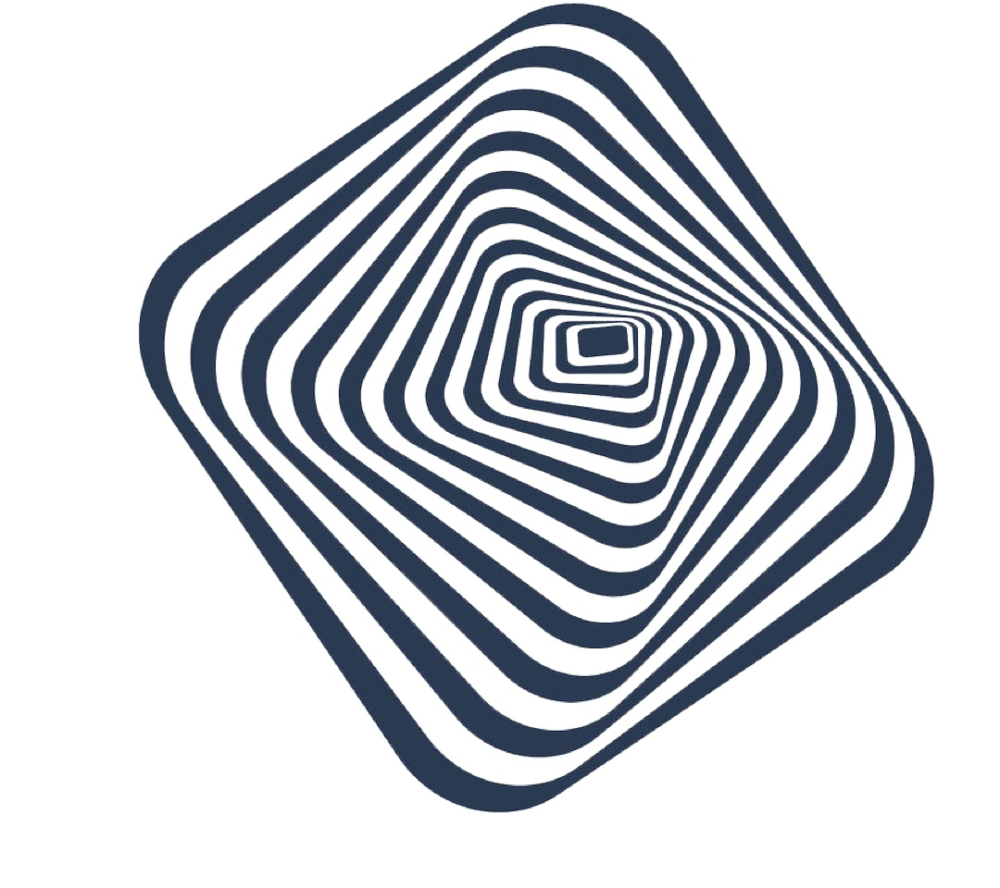
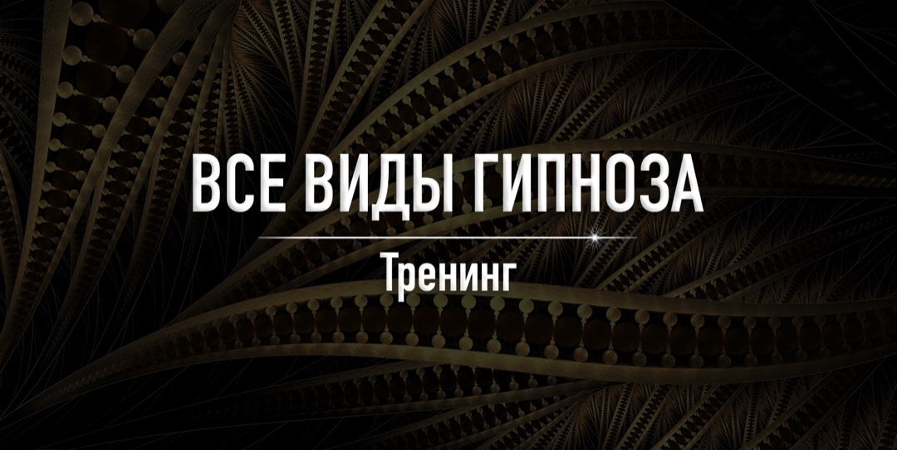

Марк Орлов
Гипнотерапевт, психолог, соавтор СНГ
Специалист по неформальному гипнозу. Применяет его в психотерапии, психокоррекции и социальных контактах, включая «уличный гипноз».
Русский Радикальный Гипноз
Углублённое освоение гипноза и форматов гипнотерапии — от классической до практик целительства. В рамках образовательной программы МАГИС им. В. М. Бехтерева.
– · Москва
На очных занятиях с первых минут отрабатывают разные виды гипноза и гипнотерапии. Преподаватели демонстрируют приёмы на самих участниках. Теоретические материалы изучают заранее.
Цель практики — довести гипнотизацию до навыка, выработать собственную манеру и сохранять «состояние потока» в разных контекстах. В блоке личной психокоррекции участники работают со своими запросами.
Задать вопрос перед оплатойУчастники полного девятидневного тренинга могут получить диплом о профессиональной переподготовке с квалификацией «Психолог» без доплаты.
Страница о дипломеНужно оконченное среднее профессиональное или высшее образование. Если вы ещё учитесь, по окончании курса вы получите справку об освоении программы. Диплом выдаётся после завершения основного образования.
Документы для оформления — паспорт, диплом о среднем профессиональном или высшем образовании и СНИЛС. По информации академии, диплом даёт право вести деятельность в сфере психологического консультирования.
В записи организаторы сопоставляют демонстрации на тренингах, применение в гипнотерапии и примеры из сектантских практик, где, по их описанию, внушение выдают за «чудо» ради прибыли.

Московская Академия Гипноза и Суггестии имени В. М. Бехтерева указывает лицензию № 042064 и приказ № 510Л от 19 апреля 2022 года. Для поиска в реестре указан ИНН 9723117991.
Реестр образовательных учрежденийПреподаватели развивают у участников собственную манеру гипнотизации, способность работать в «Потоке» и составлять индукции с учётом особенностей клиента. Авторские приёмы сочетают с общеизвестными методами.
В описании программы указаны регистрации № 020-010-907 (ISBN 978-5-4472-9489-2) и № 020-010575-0575 (ISBN 975-5-4472-9318-5).
Участник проводит гипнотизацию партнёра, сам находясь в гипнозе. Авторы связывают это упражнение с формированием «Функциональных Систем Гипнотизера», сохранением рабочего состояния и усвоением навыков. Упражнение сочетают с многократными повторениями.
Подробнее о методеУчастники меняют техники в условиях дефицита времени, чтобы выработать автоматизм. В описании метода указан интервал от 10 секунд до минуты; в расписании — от 5 секунд до минуты.
Отработка ведения сеанса в стрессовых условиях. В описании авторов проверка включает помехи, в том числе шумовые и болевые стимулы.
Развитие тона и ритма речи, её свободного построения и владения метафорами.
После рационального этапа беседы авторы проводят второй диагностический этап, направленный на выявление неосознаваемых проблем клиента и их значимости.
Подробнее о методеАвторский метод положен в основу одноимённой специализации программы профессиональной переподготовки.
Подробнее о методеПроводится в рамках гипнотерапии зависимостей. Авторы выделяют сохранение воли клиента при принятии решения и сопоставляют этот принцип с кодированием по Довженко.
Подробнее о методеРазбор стратегий регулирования скорости, продолжительности и интенсивности оргазмических переживаний в контексте сексуальных отношений партнёров.
Подробнее о методеАвторская методика развития эйфорического состояния. Авторы связывают её с уменьшением сопротивления клиента и повышением восприимчивости к гипнозу.
Подробнее о методеВ авторском описании человек без релаксации переходит ко второй или третьей стадии гипноза. Авторы сопоставляют темп этого метода с индукцией Элмана.
Подробнее о методеРазработчики программы ДПО и авторы методик обучения. Преподаватели и практикующие гипнотерапевты.
Гипнотерапевт, психолог, соавтор СНГ
Специалист по неформальному гипнозу. Применяет его в психотерапии, психокоррекции и социальных контактах, включая «уличный гипноз».
Ректор МАГИС им. В. М. Бехтерева (ДПО), соавтор СНГ
Гипнотерапевт, психолог. Специализируется на невербальном гипнозе, в том числе «Гипнотизации Взглядом», и применении гипноза в оккультных практиках, народном целительстве, шаманизме и так называемом «цыганском гипнозе». В числе практик — Фасцинация, Месмеризм и Магнетизм.

Автор Системы Неформальной Гипнотизации
Автор программы переподготовки для специалистов с высшим образованием по специальности «Психолог» со специализацией «Когнитивно-Психосоматическая Гармонизация» и других образовательных программ по гипнотерапии.
Авторы описывают неформальный гипноз как гипнотизацию без отдельного объявления. Термин также относится к подбору формы и темпа гипноза под клиента и к неожиданному моменту индукции в рамках формальной процедуры.
СНГ разработана для терапевтического контекста. В описании системы приведены психологическое консультирование, психокоррекция и психотерапия, в том числе гештальт, ЭОТ, психоанализ, транзактный анализ и телесно-ориентированная терапия.
Статья о СНГАвторы описывают контроль процессов мышления через остановку и направленность мышления («фреймирование»), моноидеизм, смену вида мышления, изменение Смыслового Содержания Сознания, установок, убеждений и поведенческих паттернов.
Гипнабельность и внушаемость авторы связывают с опытом специалиста, доверием, Побуждающими Условиями и гипнотическим раппортом. В качестве оснований они называют фазовые состояния И. П. Павлова, Функциональные Системы П. К. Анохина, теорию Установки Д. Н. Узнадзе и положения о торможении нервной системы.
В авторской модели гипнотическое состояние сочетает гипноидное состояние в определении Й. Брейера и состояние повышенной внушаемости. Отдельно рассматриваются внимание, творческое мышление, потребность и её актуализация, испуг, фиксация и дезориентация. Авторы различают замешательство как возможную исходную точку и дезориентацию как процесс.
СНГ объединяет элементы разных школ. В примерах приведены директивность классического гипноза, смена ролей у Д. Элмана и работа с образами в СМПС и ЭОТ. Состояние оценивают по шкале Е. С. Каткова; в описании перечислены каталепсия, галлюцинаторные явления, гипермнезия, амнезия, анестезия и гиперестезия.
Авторская статья сопоставляет прогрессивную релаксацию, «шоковые» методы и алертные формы гипноза. В авторском методе потенциирования эйфории рассматривается её развитие вплоть до экстаза.
Авторы обсуждают страх потери контроля, зависимости, разглашения тайн, нарушения неприкосновенности, изменения убеждений, ухудшения здоровья и невозможности выйти из гипноза. Они рассматривают предварительную беседу («пре-ток») и связывают доверие к терапевту с опытом работы.
В статье обсуждаются риски внушения, примеры злоупотреблений в сектантских и криминальных практиках и авторское обоснование применения СНГ в терапевтическом контексте. Авторы считают недопустимым применение для преступлений, сделок, манипуляций в отношениях и вербовки. Их оценка скрытого гипноза и заявления об эффективности вынесены на согласование.




Организаторы рассматривают суггестивное воздействие гипнотического характера как общий элемент разных психопрактик.
Среди примеров — НЛП, Тета-Хилинг, Рейки, шаманизм, Тантра, энергопрактики, холотропное дыхание, ведовство, колдовство, оккультные и мистические практики, энерготерапия и космоэнергетика.
Авторы выделяют системные знания, умение распознавать состояние человека, практику гипнотизации и обратную связь. Состояние «транса» они рассматривают как лёгкую, среднюю или глубокую форму гипноза.
На примерах Тета-Хилинга и НЛП они обсуждают роль подготовки специалиста, личной индуктивности, подбора тактики и практического опыта. Разнообразие тактик сопоставляется с работой Милтона Эриксона.

Психотерапевтические аспекты применения гипноза в обрядах народного целительства, ритуалах оккультизма, магии, шаманизма и религиозно-мистических традициях.
Организаторы описывают применение научного подхода к гипнозу и использование оккультно-мистического контекста для гипнотизации и гипнотерапии. Рассматриваются шаманские практики, магнетизм, месмеризм и Фасцинация.
Подробнее о гипнозе и магииПример глубокой гипнотизации в эзотерическом контексте.
Оригинал на Vimeo
Теоретические лекции и видео высылают заранее. Гипнотерапию осваивают после блока «Все Виды Гипноза».
Расписание на сайте организатораПри отработке индукций преподаватели показывают приёмы. Участники практикуются в парах и тройках, обсуждают трудности и подбирают подходящую манеру работы.



На странице организатора опубликован и этот вариант на шесть дней. В нём встречаются другие названия и темы. Подтвердить расписание можно у организатора.


4–12 января 2027 года · 9 дней · Москва
Предоплата фиксирует объявленную стоимость. Организатор сообщает, что цена может расти по мере набора группы.
В формах заявки на полную программу из трёх блоков и на третий блок «Радикальный — углублённый профессиональный» организатор указывает, что зачисление происходит после рассмотрения заявки и телефонного собеседования.
Задать вопрос перед оплатой Публичная оферта175 000 ₽
На страницах организатора публикуются видео и материалы о гипнозе и гипнотерапии.
Вопросы об участии можно задать по телефону, в WhatsApp или через форму организатора.
Задать вопрос Перейти к записи у организатора